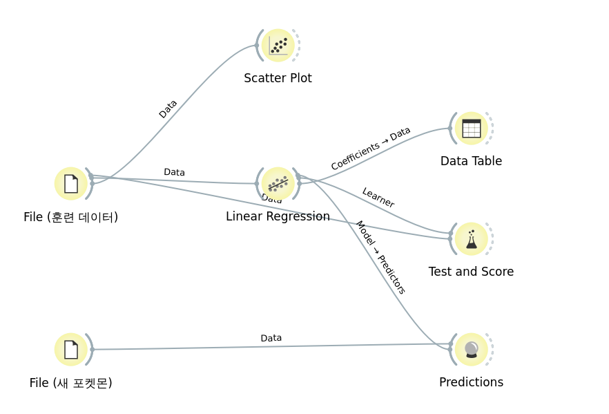

오렌지 연습하기에서 다룬 같은 포켓몬 18마리 데이터로, 이번엔 한 걸음 더 들어가 볼 차례야. 무게로 체력(HP)을 예측하는 식을 오렌지가 실제로 어떻게 만들어내는지, File → Scatter Plot → Linear Regression → Test and Score → Predictions 5단계로 직접 따라가 봐. 전부 실제 Orange3를 실행해서 캡처한 화면이야.
Scatter Plot으로 "두 변수가 관계가 있는지"는 이미 확인해봤어(상관계수 r). 회귀분석은 거기서 한 걸음 더 나가서, 그 관계를 "이 값을 넣으면 저 값이 나온다"는 구체적인 식으로 만드는 거야. 식이 있으면 데이터에 없던 새로운 경우도 예측할 수 있어.
무게(Weight)로 체력(HP)을 예측해볼 거야. 18마리 데이터에서 두 값의 상관계수는 r = 0.67 — 무게가 많이 나갈수록 체력도 대체로 높아지는, 꽤 뚜렷한 양의 관계야. (같은 무게↔방어력 조합보다 더 뚜렷한 관계를 고르기 위해 18마리 데이터의 모든 능력치 조합 상관계수를 직접 계산해서 골랐어.)
지금까지 연습한 5단계를 모두 연결하면, 실제 오렌지 캔버스는 이런 모습이 돼. File(훈련 데이터) 하나에서 Scatter Plot·Linear Regression으로 뻗어나가고, Linear Regression은 다시 Data Table·Test and Score·Predictions 세 갈래로 이어져. Predictions에는 File(새 포켓몬)에서 온 데이터도 함께 들어가. (아래는 실제로 Orange3를 실행해서 캡처한 캔버스 화면이야.)
